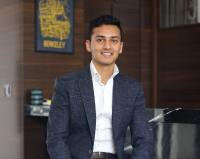

01
Process
The Brewmaster's Craft: Inside MEBL's R&D Lab Where Recipes Are Born
Step inside the quiet, yeast-scented corridors where MEBL's head brewmaster and a small team of scientists push the boundaries of what Indian beer can taste like. This is where Stok's signature chill was engineered — and where the next legend is already fermenting.
Read Story ➔